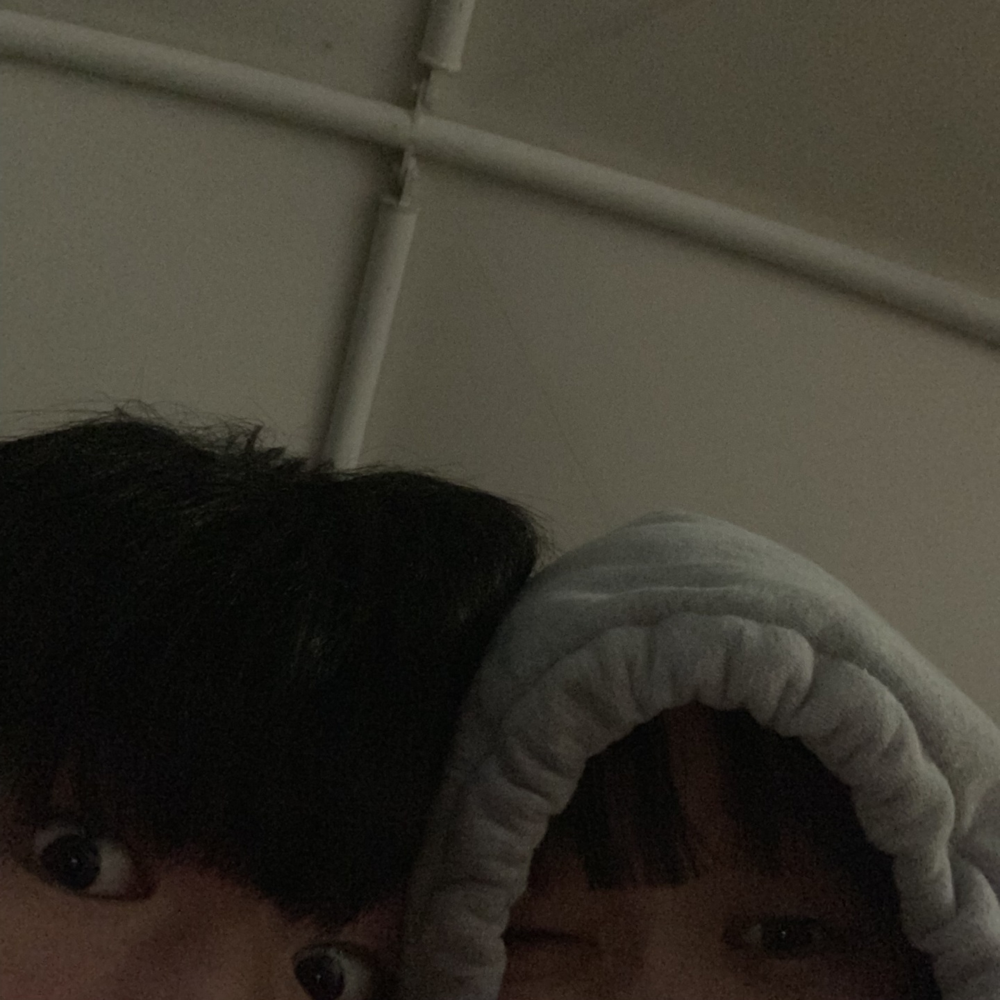

이번에 선택한 우리의 사소한 추억은 바로바로바로바로 !! 우리가 고등학교때 거의 매일 했던 저녁 산책이야ㅎㅎ
정말 그땐 왜 그랬는지 모르겠지만 너와 둘만의 시간을 가지는게 좋았달까..? 흠 아무튼 걍 내가 좋아서 이것저것 핑계대며 너랑 많이 돌아다녔지 ㅎㅎ
이사진은 우리가 20살이었을 때 같지만 마음만은 고등학생때 같았어 힣 음 이모티콘 같은게 없으니깐 좀 어색하네 ㅋㅋ
암튼! 요즘에는 차가 있으니깐 항상 차만 타고 다녀서 잘 걷질 않았던 것 같아.. 어찌보면 그립다고 할 수 있겠지? 하도 안걸어서 걷는게 좀 귀찮아 진 것 같아 ㅋㅋㅋ
정말 밤마다 맛있는거 먹으러 다녔는데 또 저때처럼 여유롭게 만나서 밤에 서로 헤어지면서 전화하던 그때가 그립다 ㅜㅜ 좀 더 저렇게 놀걸
앞으로 우리가 대학교에 가고 취업준비도 해야하면 저렇게 밤에 산책할 시간도 적어지겠지? 너무 슬프다..
진짜 생각해보니 더이상 저렇게 손잡고 걸어다닐 시간이 별로 안남은 것 같아 ㅋㅋ
아 근데 이렇게 너무 슬프게 쓰면 하은이 울텐데 ㅋㅋ 당분간 못만나고 전화도 못할테니 감정이 너무 처지네 다 슬퍼..
그래도 또 다르게 보면 우리가 이렇게 사소하고 순수한 행복한 추억이 있다는걸 떠올릴 수 있다는게 행복하네 ㅎㅎ 정말 좋았지 저때..
진짜 우리가 나이 먹는게 실감이 간다ㅜㅜㅜㅜㅜ
점점 서로가 바빠져서 우리만의 시간이 적어진다는게 근데 난 하은이랑 같이 하숙이나 동거를 한다고 약속했기 때문에 우리는 그래도 많이 만나겠네ㅎㅎ
내가 다시 사회로 나오는날 우리 다시 이렇게 여유롭게 지금까지의 추억을 되돌아보며 같이 산책해보자 너무 좋을 것 같아 ㅎ흫
정말 많이 아쉽다는건 거짓말이고 나에겐 하은이랑 만나고 하루하루가 감사하고 행복한 순간이야
나 없을동안 아프지 말고 슬픈일 있으면 받지는 못해도 음성녹음으로 보내 편지도 쓰고 옆엔 없지만 항상 생각할게 ㅋㅋㅋ
아 진짜 이렇게 쓰니깐 영원히 떠나는 기분임 ㅋㅋ 사랑해용!!
